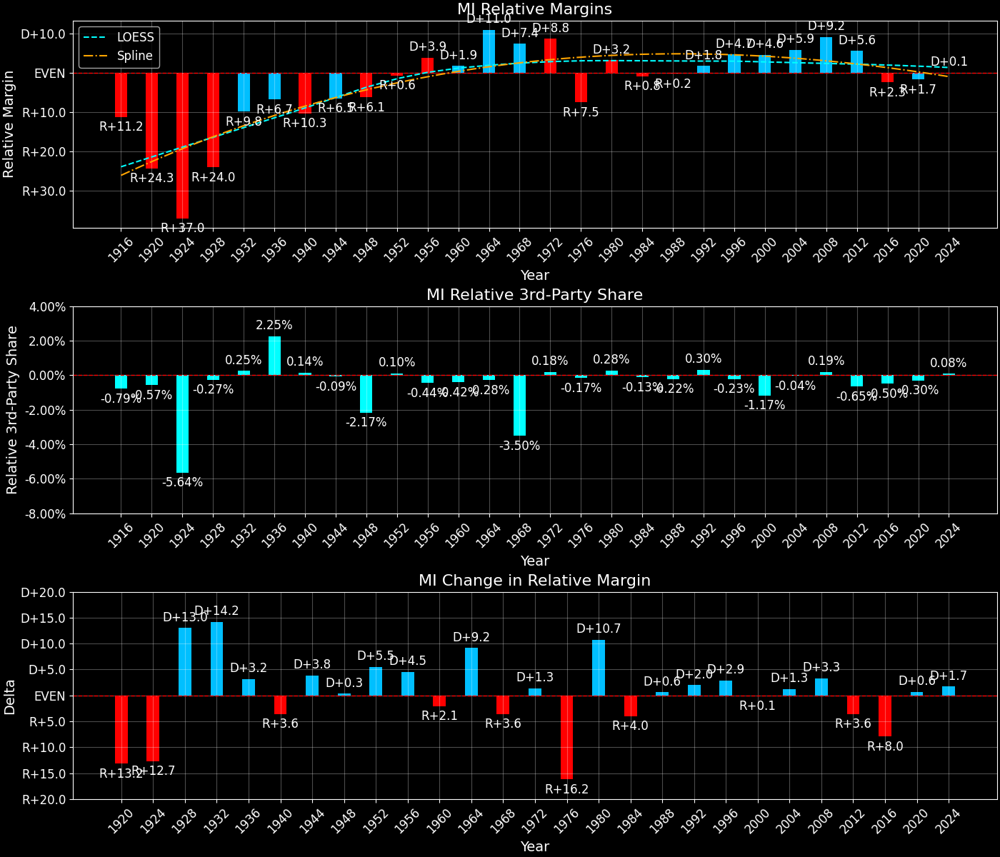

Michigan (MI) — Statewide

Margins · 3rd-Party share · Pres. deltas

Relative margins · Relative 3rd-Party · Rel. deltas
Michigan (MI) — Total Data
| Year | D | R | State Margin | Nat. Margin | Rel. Margin | Total votes | EVs |
|---|---|---|---|---|---|---|---|
| 1952 | 1,230,657(44.0%) | 1,551,529(55.4%) | R+11.5 | R+10.9 | R+0.6 | 2,798,592 | 20 |
| 1956 | 1,359,898(44.1%)(Δ 129,241) | 1,713,647(55.6%)(Δ 162,118) | R+11.5(Δ R+0.0) | R+15.4(Δ R+4.5) | D+3.9(Δ D+4.5) | 3,080,468(Δ 281,876) | 20 |
| 1960 | 1,687,269(50.9%)(Δ 327,371) | 1,620,428(48.8%)(Δ -93,219) | D+2.0(Δ D+13.5) | D+0.2(Δ D+15.6) | D+1.9(Δ R+2.1) | 3,318,097(Δ 237,629) | 20 |
| 1964 | 2,136,615(66.7%)(Δ 449,346) | 1,060,152(33.1%)(Δ -560,276) | D+33.6(Δ D+31.6) | D+22.6(Δ D+22.4) | D+11.0(Δ D+9.2) | 3,203,102(Δ -114,995) | 21 |
| 1968 | 1,593,082(48.2%)(Δ -543,533) | 1,370,665(41.5%)(Δ 310,513) | D+6.7(Δ R+26.9) | R+0.7(Δ R+23.3) | D+7.4(Δ R+3.6) | 3,306,250(Δ 103,148) | 21 |
| 1972 | 1,459,435(41.8%)(Δ -133,647) | 1,961,721(56.2%)(Δ 591,056) | R+14.4(Δ R+21.1) | R+23.1(Δ R+22.4) | D+8.8(Δ D+1.3) | 3,490,325(Δ 184,075) | 21 |
| 1976 | 1,696,714(46.4%)(Δ 237,279) | 1,893,742(51.8%)(Δ -67,979) | R+5.4(Δ D+9.0) | D+2.1(Δ D+25.2) | R+7.5(Δ R+16.2) | 3,653,749(Δ 163,424) | 21 |
| 1980 | 1,661,532(42.5%)(Δ -35,182) | 1,915,225(49.0%)(Δ 21,483) | R+6.5(Δ R+1.1) | R+9.7(Δ R+11.8) | D+3.2(Δ D+10.7) | 3,909,725(Δ 255,976) | 21 |
| 1984 | 1,529,638(40.2%)(Δ -131,894) | 2,251,571(59.2%)(Δ 336,346) | R+19.0(Δ R+12.5) | R+18.2(Δ R+8.5) | R+0.8(Δ R+4.0) | 3,801,658(Δ -108,067) | 20 |
| 1988 | 1,675,783(45.7%)(Δ 146,145) | 1,965,486(53.6%)(Δ -286,085) | R+7.9(Δ D+11.1) | R+7.7(Δ D+10.5) | R+0.2(Δ D+0.6) | 3,669,163(Δ -132,495) | 20 |
| 1992 | 1,871,182(43.8%)(Δ 195,399) | 1,554,940(36.4%)(Δ -410,546) | D+7.4(Δ D+15.3) | D+5.6(Δ D+13.3) | D+1.8(Δ D+2.0) | 4,274,673(Δ 605,510) | 18 |
| 1996 | 1,989,653(51.7%)(Δ 118,471) | 1,481,212(38.5%)(Δ -73,728) | D+13.2(Δ D+5.8) | D+8.5(Δ D+3.0) | D+4.7(Δ D+2.9) | 3,848,844(Δ -425,829) | 18 |
| 2000 | 2,170,418(51.3%)(Δ 180,765) | 1,953,139(46.1%)(Δ 471,927) | D+5.1(Δ R+8.1) | D+0.5(Δ R+8.0) | D+4.6(Δ R+0.1) | 4,232,501(Δ 383,657) | 18 |
| 2004 | 2,479,183(51.2%)(Δ 308,765) | 2,313,746(47.8%)(Δ 360,607) | D+3.4(Δ R+1.7) | R+2.5(Δ R+3.0) | D+5.9(Δ D+1.3) | 4,839,252(Δ 606,751) | 17 |
| 2008 | 2,872,579(57.4%)(Δ 393,396) | 2,048,639(41.0%)(Δ -265,107) | D+16.5(Δ D+13.1) | D+7.3(Δ D+9.7) | D+9.2(Δ D+3.3) | 5,001,766(Δ 162,514) | 17 |
| 2012 | 2,564,569(54.2%)(Δ -308,010) | 2,115,256(44.7%)(Δ 66,617) | D+9.5(Δ R+7.0) | D+3.9(Δ R+3.4) | D+5.6(Δ R+3.6) | 4,730,961(Δ -270,805) | 16 |
| 2016 | 2,268,839(47.3%)(Δ -295,730) | 2,279,543(47.5%)(Δ 164,287) | R+0.2(Δ R+9.7) | D+2.1(Δ R+1.8) | R+2.3(Δ R+8.0) | 4,799,284(Δ 68,323) | 16 |
| 2020 | 2,804,040(50.6%)(Δ 535,201) | 2,649,852(47.8%)(Δ 370,309) | D+2.8(Δ D+3.0) | D+4.5(Δ D+2.4) | R+1.7(Δ D+0.6) | 5,539,302(Δ 740,018) | 16 |
| 2024 | 2,736,533(48.3%)(Δ -67,507) | 2,816,636(49.7%)(Δ 166,784) | R+1.4(Δ R+4.2) | R+1.5(Δ R+5.9) | D+0.1(Δ D+1.7) | 5,664,186(Δ 124,884) | 15 |
Column explanations
- Δ
- Change (delta) in the value from the previous election year.
- Year
- Election year.
- D
- Number of votes for the Democratic candidate (raw count(pct%)).
- R
- Number of votes for the Republican candidate (raw count(pct%)).
- State Margin
- Margin between the two major-party candidates, including third-party votes ((D - R)/total).
- Nat. Margin
- The national presidential margin for that year, including third-party votes ((D_total - R_total)/total_votes).
- Rel. Margin
- The presidential margin relative to the national presidential margin (Margin - Nat. Margin).
- Total votes
- Total voter turnout or ballots cast (when provided).
- EVs
- Number of electoral votes allocated to this state or unit.
Michigan (MI) — Third-Party Data
| Year | D | R | Other votes | State 3rd-Party Share | 3rd-Party Nat. Share | 3rd-Party Rel. Share |
|---|---|---|---|---|---|---|
| 1952 | 1,230,657(44.0%) | 1,551,529(55.4%) | 16,406(0.6%) | 0.59% | 0.49% | 0.10% |
| 1956 | 1,359,898(44.1%)(Δ 129,241) | 1,713,647(55.6%)(Δ 162,118) | 6,923(0.2%) | 0.22% | 0.67% | -0.44% |
| 1960 | 1,687,269(50.9%)(Δ 327,371) | 1,620,428(48.8%)(Δ -93,219) | 10,400(0.3%) | 0.31% | 0.73% | -0.42% |
| 1964 | 2,136,615(66.7%)(Δ 449,346) | 1,060,152(33.1%)(Δ -560,276) | 6,335(0.2%) | 0.20% | 0.48% | -0.28% |
| 1968 | 1,593,082(48.2%)(Δ -543,533) | 1,370,665(41.5%)(Δ 310,513) | 342,503(10.4%) | 10.36% | 13.86% | -3.50% |
| 1972 | 1,459,435(41.8%)(Δ -133,647) | 1,961,721(56.2%)(Δ 591,056) | 69,169(2.0%) | 1.98% | 1.80% | 0.18% |
| 1976 | 1,696,714(46.4%)(Δ 237,279) | 1,893,742(51.8%)(Δ -67,979) | 63,293(1.7%) | 1.73% | 1.90% | -0.17% |
| 1980 | 1,661,532(42.5%)(Δ -35,182) | 1,915,225(49.0%)(Δ 21,483) | 332,968(8.5%) | 8.52% | 8.24% | 0.28% |
| 1984 | 1,529,638(40.2%)(Δ -131,894) | 2,251,571(59.2%)(Δ 336,346) | 20,449(0.5%) | 0.54% | 0.67% | -0.13% |
| 1988 | 1,675,783(45.7%)(Δ 146,145) | 1,965,486(53.6%)(Δ -286,085) | 27,894(0.8%) | 0.76% | 0.98% | -0.22% |
| 1992 | 1,871,182(43.8%)(Δ 195,399) | 1,554,940(36.4%)(Δ -410,546) | 848,551(19.9%) | 19.85% | 19.55% | 0.30% |
| 1996 | 1,989,653(51.7%)(Δ 118,471) | 1,481,212(38.5%)(Δ -73,728) | 377,979(9.8%) | 9.82% | 10.05% | -0.23% |
| 2000 | 2,170,418(51.3%)(Δ 180,765) | 1,953,139(46.1%)(Δ 471,927) | 108,944(2.6%) | 2.57% | 3.75% | -1.17% |
| 2004 | 2,479,183(51.2%)(Δ 308,765) | 2,313,746(47.8%)(Δ 360,607) | 46,323(1.0%) | 0.96% | 1.00% | -0.04% |
| 2008 | 2,872,579(57.4%)(Δ 393,396) | 2,048,639(41.0%)(Δ -265,107) | 80,548(1.6%) | 1.61% | 1.42% | 0.19% |
| 2012 | 2,564,569(54.2%)(Δ -308,010) | 2,115,256(44.7%)(Δ 66,617) | 51,136(1.1%) | 1.08% | 1.73% | -0.65% |
| 2016 | 2,268,839(47.3%)(Δ -295,730) | 2,279,543(47.5%)(Δ 164,287) | 250,902(5.2%) | 5.23% | 5.73% | -0.50% |
| 2020 | 2,804,040(50.6%)(Δ 535,201) | 2,649,852(47.8%)(Δ 370,309) | 85,410(1.5%) | 1.54% | 1.84% | -0.30% |
| 2024 | 2,736,533(48.3%)(Δ -67,507) | 2,816,636(49.7%)(Δ 166,784) | 111,017(2.0%) | 1.96% | 1.88% | 0.08% |
Column explanations
- Year
- Election year.
- D
- Number of votes for the Democratic candidate (raw count(pct%)).
- R
- Number of votes for the Republican candidate (raw count(pct%)).
- Other votes
- Number of votes for third-party (other) candidates (raw count(pct%)).
- State 3rd-Party Share
- Share of the vote received by third-party (other) candidates.
- 3rd-Party Nat. Share
- The national third-party share for that year (3rd-Party votes / total votes).
- 3rd-Party Rel. Share
- Third-party share relative to the national third-party share (3rd-Party share - Nat. 3rd-Party share).

Two-party margins · relative · deltas
Michigan (MI) — Two-Party Data
| Year | D | R | 2-Party Margin | 2-Party Nat. Margin | 2-Party Rel. Margin | EVs |
|---|---|---|---|---|---|---|
| 1952 | 1,230,657(44.2%) | 1,551,529(55.8%) | R+11.5 | R+10.9 | R+0.6 | 20 |
| 1956 | 1,359,898(44.2%)(Δ 129,241) | 1,713,647(55.8%)(Δ 162,118) | R+11.5(Δ D+0.0) | R+15.5(Δ R+4.6) | D+4.0(Δ D+4.6) | 20 |
| 1960 | 1,687,269(51.0%)(Δ 327,371) | 1,620,428(49.0%)(Δ -93,219) | D+2.0(Δ D+13.5) | D+0.2(Δ D+15.7) | D+1.9(Δ R+2.1) | 20 |
| 1964 | 2,136,615(66.8%)(Δ 449,346) | 1,060,152(33.2%)(Δ -560,276) | D+33.7(Δ D+31.7) | D+22.7(Δ D+22.5) | D+11.0(Δ D+9.1) | 21 |
| 1968 | 1,593,082(53.8%)(Δ -543,533) | 1,370,665(46.2%)(Δ 310,513) | D+7.5(Δ R+26.2) | R+0.8(Δ R+23.5) | D+8.3(Δ R+2.7) | 21 |
| 1972 | 1,459,435(42.7%)(Δ -133,647) | 1,961,721(57.3%)(Δ 591,056) | R+14.7(Δ R+22.2) | R+23.6(Δ R+22.8) | D+8.9(Δ D+0.6) | 21 |
| 1976 | 1,696,714(47.3%)(Δ 237,279) | 1,893,742(52.7%)(Δ -67,979) | R+5.5(Δ D+9.2) | D+2.1(Δ D+25.7) | R+7.6(Δ R+16.5) | 21 |
| 1980 | 1,661,532(46.5%)(Δ -35,182) | 1,915,225(53.5%)(Δ 21,483) | R+7.1(Δ R+1.6) | R+10.6(Δ R+12.7) | D+3.5(Δ D+11.1) | 21 |
| 1984 | 1,529,638(40.5%)(Δ -131,894) | 2,251,571(59.5%)(Δ 336,346) | R+19.1(Δ R+12.0) | R+18.3(Δ R+7.7) | R+0.8(Δ R+4.3) | 20 |
| 1988 | 1,675,783(46.0%)(Δ 146,145) | 1,965,486(54.0%)(Δ -286,085) | R+8.0(Δ D+11.1) | R+7.8(Δ D+10.5) | R+0.2(Δ D+0.6) | 20 |
| 1992 | 1,871,182(54.6%)(Δ 195,399) | 1,554,940(45.4%)(Δ -410,546) | D+9.2(Δ D+17.2) | D+6.9(Δ D+14.7) | D+2.3(Δ D+2.5) | 18 |
| 1996 | 1,989,653(57.3%)(Δ 118,471) | 1,481,212(42.7%)(Δ -73,728) | D+14.6(Δ D+5.4) | D+9.5(Δ D+2.6) | D+5.2(Δ D+2.9) | 18 |
| 2000 | 2,170,418(52.6%)(Δ 180,765) | 1,953,139(47.4%)(Δ 471,927) | D+5.3(Δ R+9.4) | D+0.5(Δ R+8.9) | D+4.7(Δ R+0.4) | 18 |
| 2004 | 2,479,183(51.7%)(Δ 308,765) | 2,313,746(48.3%)(Δ 360,607) | D+3.5(Δ R+1.8) | R+2.5(Δ R+3.0) | D+5.9(Δ D+1.2) | 17 |
| 2008 | 2,872,579(58.4%)(Δ 393,396) | 2,048,639(41.6%)(Δ -265,107) | D+16.7(Δ D+13.3) | D+7.4(Δ D+9.9) | D+9.4(Δ D+3.4) | 17 |
| 2012 | 2,564,569(54.8%)(Δ -308,010) | 2,115,256(45.2%)(Δ 66,617) | D+9.6(Δ R+7.1) | D+3.9(Δ R+3.4) | D+5.7(Δ R+3.7) | 16 |
| 2016 | 2,268,839(49.9%)(Δ -295,730) | 2,279,543(50.1%)(Δ 164,287) | R+0.2(Δ R+9.8) | D+2.2(Δ R+1.7) | R+2.5(Δ R+8.1) | 16 |
| 2020 | 2,804,040(51.4%)(Δ 535,201) | 2,649,852(48.6%)(Δ 370,309) | D+2.8(Δ D+3.1) | D+4.5(Δ D+2.3) | R+1.7(Δ D+0.7) | 16 |
| 2024 | 2,736,533(49.3%)(Δ -67,507) | 2,816,636(50.7%)(Δ 166,784) | R+1.4(Δ R+4.3) | R+1.5(Δ R+6.0) | D+0.1(Δ D+1.8) | 15 |
Column explanations
- Δ
- Change (delta) in the value from the previous election year.
- Year
- Election year.
- D
- Number of votes for the Democratic candidate (raw count(pct%)).
- R
- Number of votes for the Republican candidate (raw count(pct%)).
- 2-Party Margin
- Margin between the two major-party candidates, ignoring third-party votes ((D - R)/(D + R)).
- 2-Party Nat. Margin
- The national presidential margin for that year, including third-party votes ((D_total - R_total)/total_votes).
- 2-Party Rel. Margin
- The presidential margin relative to the national presidential margin (Margin - Nat. Margin).
- EVs
- Number of electoral votes allocated to this state or unit.